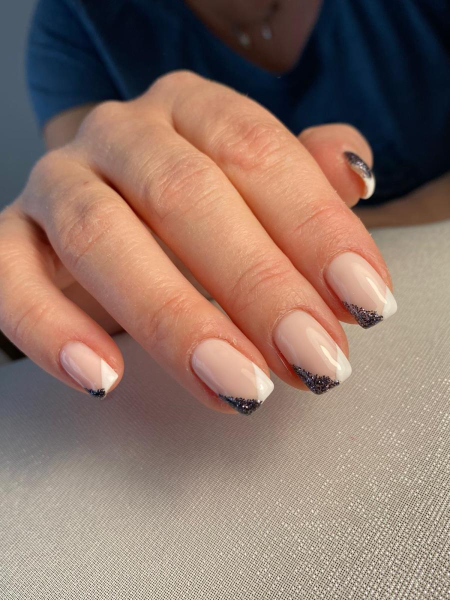

Mes créations
Maud Institut, c'est aussi l'échange, le conseil et le partage d'idée
pour donner naissances à des créations originales
Toutes mes
productions sont imaginées pour vous mais aussi pour vous!
Venez découvrir celles que mes clientes ont choisie qui sont le resultat
de plusieurs techniques émergentes de l'onglerie:
- l'extension chablon
- la dépose de gel
- le vernis semi-permanent
- le nail arts
